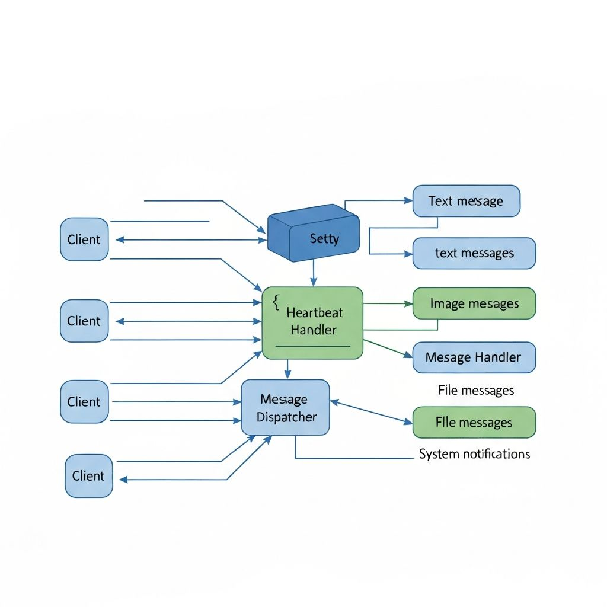

EasyChat 即时通讯系统 - 毕业设计论文图表
高质量AI生成图表（可直接用于论文）
High-Quality Generated Images for Thesis

图E WebSocket通信架构图
说明：以上为AI生成的高质量图表，可直接下载用于毕业论文。右键点击图片选择"另存为"即可保存。
图1 系统整体架构图
System Architecture Diagram
graph TB
subgraph 客户端层["客户端层 Client Layer"]
A[Electron 桌面应用]
A1[Vue.js 3 界面]
A2[SQLite 本地存储]
A3[WebSocket 客户端]
end
subgraph 通信层["通信层 Communication Layer"]
B[HTTP/HTTPS 请求]
C[WebSocket 长连接]
end
subgraph 服务端层["服务端层 Server Layer"]
D[Spring Boot 应用服务器]
E[Netty WebSocket 服务器]
F[业务逻辑层 Service]
G[数据访问层 MyBatis]
end
subgraph 数据层["数据层 Data Layer"]
H[(MySQL 数据库)]
I[(Redis 缓存)]
J[文件存储系统]
end
A --> A1
A --> A2
A --> A3
A1 --> B
A3 --> C
B --> D
C --> E
D --> F
E --> F
F --> G
G --> H
F --> I
F --> J
说明：EasyChat采用前后端分离的B/S与C/S混合架构。客户端基于Electron构建桌面应用，使用Vue.js 3实现界面渲染，SQLite进行本地消息缓存。服务端采用Spring Boot处理HTTP业务请求，Netty实现高性能WebSocket长连接通信，支持实时消息推送。
图2 技术栈组成图
Technology Stack
图3 数据库E-R图
Entity-Relationship Diagram
erDiagram
USER_INFO ||--o{ USER_CONTACT : "拥有"
USER_INFO ||--o{ CHAT_MESSAGE : "发送"
USER_INFO ||--o{ CHAT_SESSION_USER : "参与"
USER_INFO ||--o{ GROUP_INFO : "创建"
USER_INFO ||--o{ MOMENT : "发布"
USER_INFO ||--o{ MOMENT_LIKE : "点赞"
USER_INFO ||--o{ MOMENT_COMMENT : "评论"
GROUP_INFO ||--o{ USER_CONTACT : "包含成员"
GROUP_INFO ||--o{ CHAT_MESSAGE : "群消息"
CHAT_SESSION ||--o{ CHAT_SESSION_USER : "关联"
CHAT_SESSION ||--o{ CHAT_MESSAGE : "包含"
MOMENT ||--o{ MOMENT_MEDIA : "包含媒体"
MOMENT ||--o{ MOMENT_LIKE : "被点赞"
MOMENT ||--o{ MOMENT_COMMENT : "被评论"
USER_INFO {
string userId PK "用户ID"
string email "邮箱"
string nickName "昵称"
string password "密码"
int sex "性别"
string personalSignature "个性签名"
int status "状态"
datetime createTime "创建时间"
datetime lastLoginTime "最后登录"
}
GROUP_INFO {
string groupId PK "群组ID"
string groupName "群名称"
string groupOwnerId FK "群主ID"
string groupNotice "群公告"
int joinType "加入方式"
int status "状态"
int memberCount "成员数量"
}
CHAT_MESSAGE {
bigint messageId PK "消息ID"
string sessionId FK "会话ID"
int messageType "消息类型"
string messageContent "消息内容"
string sendUserId FK "发送者ID"
bigint sendTime "发送时间"
int status "状态"
int fileType "文件类型"
}
MOMENT {
bigint id PK "动态ID"
string userId FK "用户ID"
string content "内容"
int visibility "可见性"
string location "位置"
datetime createTime "创建时间"
}
说明：系统数据库设计包含用户信息表、群组信息表、聊天消息表、会话表、联系人表、朋友圈动态表等核心表，通过外键关联实现数据完整性约束，支持一对多、多对多等关系模型。
图4 用户登录时序图
User Login Sequence Diagram
sequenceDiagram
participant C as 客户端
participant S as Spring Boot服务
participant R as Redis缓存
participant DB as MySQL数据库
participant N as Netty服务
C->>S: 1. 请求验证码
S->>R: 2. 生成并缓存验证码
S-->>C: 3. 返回验证码图片
C->>S: 4. 提交登录请求(邮箱/密码/验证码)
S->>R: 5. 验证验证码
R-->>S: 6. 验证结果
alt 验证码正确
S->>DB: 7. 查询用户信息
DB-->>S: 8. 返回用户数据
alt 用户存在且密码正确
S->>R: 9. 生成Token并缓存
S-->>C: 10. 返回登录成功(Token)
C->>N: 11. WebSocket连接(携带Token)
N->>R: 12. 验证Token
R-->>N: 13. Token有效
N-->>C: 14. 连接成功
N->>C: 15. 推送离线消息和会话列表
else 登录失败
S-->>C: 返回错误信息
end
else 验证码错误
S-->>C: 返回验证码错误
end
图5 消息发送流程图
Message Sending Flow Diagram
flowchart TD
A[用户输入消息] --> B{消息类型判断}
B -->|文本消息| C[封装文本消息体]
B -->|图片/视频| D[上传文件到服务器]
B -->|文件| E[分片上传文件]
D --> F[获取文件URL]
E --> F
C --> G[调用发送消息API]
F --> G
G --> H[服务端接收消息]
H --> I[存储消息到数据库]
I --> J{判断接收方类型}
J -->|单聊| K[查找接收方WebSocket连接]
J -->|群聊| L[查找所有群成员连接]
K --> M{用户在线?}
L --> N[遍历群成员]
N --> M
M -->|在线| O[通过WebSocket推送消息]
M -->|离线| P[存储为离线消息]
O --> Q[客户端接收并展示]
P --> R[用户上线时推送]
R --> Q
Q --> S[更新本地SQLite]
S --> T[更新会话列表]
图6 WebSocket通信架构图
WebSocket Communication Architecture
graph LR
subgraph 客户端["客户端 Clients"]
C1[用户A]
C2[用户B]
C3[用户C]
end
subgraph Netty服务["Netty WebSocket Server"]
direction TB
H1[HandlerHeartBeat
心跳检测]
H2[HandlerWebSocket
消息处理]
H3[ChannelContextUtils
连接管理]
H4[MessageHandler
消息分发]
end
subgraph 消息类型["消息类型 Message Types"]
M1[文本消息]
M2[图片消息]
M3[文件消息]
M4[系统通知]
M5[好友申请]
M6[群组消息]
end
C1 <-->|WebSocket| H2
C2 <-->|WebSocket| H2
C3 <-->|WebSocket| H2
H1 --> H2
H2 --> H3
H2 --> H4
H4 --> M1
H4 --> M2
H4 --> M3
H4 --> M4
H4 --> M5
H4 --> M6
说明：系统使用Netty实现WebSocket服务器，通过Channel管理所有客户端连接。HandlerHeartBeat负责心跳检测保持连接活跃，HandlerWebSocket处理消息收发，ChannelContextUtils管理用户连接映射，MessageHandler根据消息类型进行分发处理。
图7 系统功能模块图
System Function Module Diagram
graph TB
A[EasyChat 即时通讯系统]
A --> B[用户管理模块]
A --> C[聊天通讯模块]
A --> D[联系人模块]
A --> E[群组管理模块]
A --> F[朋友圈模块]
A --> G[系统管理模块]
B --> B1[用户注册]
B --> B2[用户登录]
B --> B3[个人信息管理]
B --> B4[密码修改]
C --> C1[单聊消息]
C --> C2[群聊消息]
C --> C3[图片发送]
C --> C4[文件传输]
C --> C5[消息撤回]
C --> C6[历史记录]
D --> D1[添加好友]
D --> D2[好友申请处理]
D --> D3[删除好友]
D --> D4[好友搜索]
E --> E1[创建群组]
E --> E2[邀请入群]
E --> E3[退出群组]
E --> E4[群成员管理]
E --> E5[群公告设置]
F --> F1[发布动态]
F --> F2[图片上传]
F --> F3[点赞功能]
F --> F4[评论回复]
F --> F5[动态删除]
G --> G1[用户管理]
G --> G2[群组管理]
G --> G3[系统设置]
G --> G4[版本更新]
图8 前端组件结构图
Frontend Component Structure
graph TD
App[App.vue 根组件]
App --> Login[Login.vue 登录页]
App --> Main[Main.vue 主页面]
App --> Update[Update.vue 更新页]
Main --> Chat[Chat 聊天模块]
Main --> Contact[Contact 联系人模块]
Main --> Moment[Moment 朋友圈模块]
Main --> Setting[Setting 设置模块]
Chat --> ChatSession[ChatSession.vue
会话列表]
Chat --> ChatMessage[ChatMessage.vue
消息展示]
Chat --> MessageSend[MessageSend.vue
消息发送]
Chat --> ChatGroupDetail[ChatGroupDetail.vue
群详情]
Contact --> ContactApply[ContactApply.vue
好友申请]
Contact --> UserDetail[UserDetail.vue
用户详情]
Contact --> GroupDetail[GroupDetail.vue
群组详情]
Contact --> Search[Search.vue
搜索]
Moment --> MomentList[朋友圈列表]
Moment --> PublishMoment[PublishMoment.vue
发布动态]
Moment --> MomentDetail[MomentDetail.vue
动态详情]
Setting --> UserInfo[UserInfo.vue
个人信息]
Setting --> FileManage[FileManage.vue
文件管理]
Setting --> About[About.vue
关于]
图9 后端服务层架构图
Backend Service Layer Architecture
graph TB
subgraph Controller层["Controller 控制层"]
AC[AccountController
账户控制器]
CC[ChatController
聊天控制器]
UC[UserContactController
联系人控制器]
GC[GroupController
群组控制器]
MC[MomentController
朋友圈控制器]
FC[FileUploadController
文件上传控制器]
end
subgraph Service层["Service 业务层"]
US[UserInfoService]
CS[ChatMessageService]
UCS[UserContactService]
GS[GroupInfoService]
MS[MomentService]
FS[FileUploadService]
end
subgraph Mapper层["Mapper 数据访问层"]
UM[UserInfoMapper]
CM[ChatMessageMapper]
UCM[UserContactMapper]
GM[GroupInfoMapper]
MM[MomentMapper]
end
subgraph 数据库["Database"]
DB[(MySQL)]
end
AC --> US
CC --> CS
UC --> UCS
GC --> GS
MC --> MS
FC --> FS
US --> UM
CS --> CM
UCS --> UCM
GS --> GM
MS --> MM
UM --> DB
CM --> DB
UCM --> DB
GM --> DB
MM --> DB
图10 核心数据库表结构
Core Database Table Structure
| 表名 |
中文名称 |
主要字段 |
说明 |
| user_info |
用户信息表 |
userId, email, nickName, password, status |
存储用户基本信息和认证数据 |
| group_info |
群组信息表 |
groupId, groupName, groupOwnerId, memberCount |
存储群组基本信息 |
| user_contact |
联系人关系表 |
userId, contactId, contactType, status |
存储好友和群组关系 |
| chat_message |
聊天消息表 |
messageId, sessionId, messageType, messageContent, sendTime |
存储所有聊天消息记录 |
| chat_session |
会话表 |
sessionId, lastMessage, lastReceiveTime |
存储聊天会话信息 |
| chat_session_user |
会话用户关联表 |
userId, sessionId, contactId, noReadCount |
存储用户与会话的关联 |
| user_contact_apply |
好友申请表 |
applyId, applyUserId, receiveUserId, status |
存储好友申请记录 |
| moment |
朋友圈动态表 |
id, userId, content, visibility, createTime |
存储朋友圈动态 |
| moment_media |
朋友圈媒体表 |
id, momentId, filePath, mediaType |
存储朋友圈图片/视频 |
| moment_like |
朋友圈点赞表 |
id, momentId, userId, createTime |
存储点赞记录 |
| moment_comment |
朋友圈评论表 |
id, momentId, userId, content, replyToUserId |
存储评论和回复 |
| app_update |
应用更新表 |
id, version, updateDesc, status |
存储应用版本更新信息 |
图11 系统用例图
System Use Case Diagram
graph LR
subgraph 用户["普通用户"]
U((用户))
end
subgraph 管理员["系统管理员"]
A((管理员))
end
subgraph 用例["系统用例"]
UC1[注册账号]
UC2[登录系统]
UC3[修改个人信息]
UC4[添加好友]
UC5[发送消息]
UC6[创建群组]
UC7[发布朋友圈]
UC8[查看朋友圈]
UC9[点赞评论]
UC10[文件传输]
UC11[消息撤回]
UC12[搜索联系人]
UC13[用户管理]
UC14[群组管理]
UC15[系统设置]
UC16[版本发布]
end
U --> UC1
U --> UC2
U --> UC3
U --> UC4
U --> UC5
U --> UC6
U --> UC7
U --> UC8
U --> UC9
U --> UC10
U --> UC11
U --> UC12
A --> UC2
A --> UC13
A --> UC14
A --> UC15
A --> UC16
图12 系统部署架构图
System Deployment Architecture
graph TB
subgraph 用户端["用户终端"]
PC1[Windows 客户端]
PC2[macOS 客户端]
PC3[Linux 客户端]
end
subgraph 负载均衡["负载均衡层"]
LB[Nginx 负载均衡]
end
subgraph 应用服务器["应用服务器集群"]
AS1[Spring Boot 实例1
HTTP服务 端口5050]
AS2[Spring Boot 实例2
HTTP服务 端口5050]
WS1[Netty 实例1
WebSocket 端口5051]
WS2[Netty 实例2
WebSocket 端口5051]
end
subgraph 数据层["数据存储层"]
MySQL[(MySQL 8.0
主从复制)]
Redis[(Redis 集群
缓存/Session)]
FileServer[文件服务器
图片/视频/文件]
end
PC1 --> LB
PC2 --> LB
PC3 --> LB
LB --> AS1
LB --> AS2
LB --> WS1
LB --> WS2
AS1 --> MySQL
AS2 --> MySQL
AS1 --> Redis
AS2 --> Redis
WS1 --> Redis
WS2 --> Redis
AS1 --> FileServer
AS2 --> FileServer
图13 消息类型定义
Message Type Enumeration
| 类型值 |
类型名称 |
描述 |
处理方式 |
| 0 |
WS_INIT |
WebSocket连接初始化 |
推送离线消息和会话列表 |
| 1 |
ADD_FRIEND |
添加好友成功 |
更新联系人列表 |
| 2 |
CHAT |
聊天消息 |
保存消息并推送 |
| 3 |
GROUP_CREATE |
群组创建 |
创建群会话 |
| 4 |
CONTACT_APPLY |
好友申请 |
更新申请数量 |
| 5 |
MEDIA_CHAT |
图片/视频消息 |
上传文件并推送 |
| 6 |
FILE_UPLOAD |
文件上传完成 |
更新消息状态 |
| 7 |
FORCE_OFF_LINE |
强制下线 |
断开连接返回登录 |
| 8 |
DISSOLUTION_GROUP |
解散群聊 |
删除群会话 |
| 9 |
ADD_GROUP |
加入群组 |
更新群成员 |
| 10 |
GROUP_NAME_UPDATE |
群名称修改 |
更新群名称显示 |
| 11 |
LEAVE_GROUP |
退出群聊 |
更新群成员数量 |
| 12 |
REMOVE_GROUP |
移出群聊 |
删除被移出用户的会话 |
| 14 |
RECALL_MESSAGE |
撤回消息 |
更新消息显示为已撤回 |
图14 文件分片上传流程图
Chunk File Upload Flow
flowchart TD
A[选择文件] --> B[计算文件MD5]
B --> C[检查文件是否已存在]
C -->|已存在| D[秒传成功]
C -->|不存在| E[计算分片数量]
E --> F[开始分片上传]
F --> G{所有分片上传完成?}
G -->|否| H[上传下一分片]
H --> I[服务器保存分片]
I --> J[返回上传进度]
J --> G
G -->|是| K[服务器合并分片]
K --> L[生成文件记录]
L --> M[返回文件信息]
D --> M
M --> N[更新消息状态]
说明：大文件采用分片上传机制，前端使用SparkMD5计算文件哈希值实现秒传功能，将大文件分割成多个小块依次上传，支持断点续传，服务器端接收完所有分片后进行合并。
图15 前端状态管理架构
Frontend State Management (Pinia)
graph TB
subgraph Pinia状态仓库["Pinia Store"]
US[UserInfoStore
用户信息状态]
MS[MessageCountStore
消息计数状态]
SS[SysSettingStore
系统设置状态]
CS[ContactStateStore
联系人状态]
AS[AvatarUpdateStore
头像更新状态]
GS[GlobalInfoStore
全局信息状态]
end
subgraph 组件["Vue组件"]
Login[Login.vue]
Main[Main.vue]
Chat[Chat.vue]
Contact[Contact.vue]
Setting[Setting.vue]
end
Login --> US
Main --> US
Main --> MS
Main --> SS
Main --> GS
Main --> AS
Chat --> MS
Chat --> CS
Contact --> CS
Contact --> MS
Setting --> US
Setting --> SS